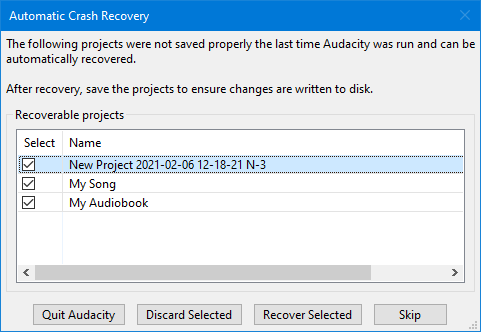
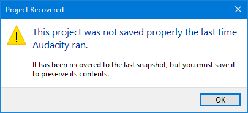

Automatic Crash Recovery
This is normally robust and successful, although you may lose the very last thing you were doing to a project.
|
After recovery, the data is still in unsaved state: if the recovery appears correct, use to save the recovered project immediately. If the project is not saved when you exit, Audacity will prompt if you want to save the changes. If you choose not to save, all unsaved changes will be deleted and not recoverable. |
Recovery of projects
- 
- Automatic Crash Recovery: one unsaved and two saved projects
- When Audacity is launched following a crash it will offer to recover the crashed projects. You can choose to either accept the recovery or to discard the projects.
- By default all the recoverable projects are marked as selected for action.
- You can un-select projects for either action by clicking on their checkbox.
- Clicking on Select will toggle the selection.
- You can discard just some and then the recovery dialog will remain open enabling you to select others for recovery.
- In the above example the unsaved project is shown as "New Project" with a date and time stamp. The saved projects show their saved project names.
| The Recovery dialog can be expanded if required by clicking and dragging on the hatched triangle dragger at the bottom right of the dialog. |
The buttons
- Exits Audacity without any changes. The Automatic Crash Recovery dialog will reappear next time you launch Audacity.
- Discards the unsaved data for all selected projects. You will receive a prompt asking if you are sure this is what you want to do. If you confirm that want to discard all projects, they will not be recoverable later.
- Attempts to recover the unsaved data for all selected projects, and load the recovered waveforms. If there are multiple unsaved projects, each will recover into their own project window.
- Skips recovery and just opens Audacity. Audacity will remember the recoverable projects and will offer them for recovery the next time you launch Audacity.
Recovering projects where there may be a small amount of data loss
As you work on Audacity it will be taking "snapshots" of the current safe state of your project(s).
In the event of a crash with unsaved actions (usually only the last thing you were doing) Audacity Recovery will roll back to the latest safe snapshot of your project(s).
In this case you will see this information message:
- 